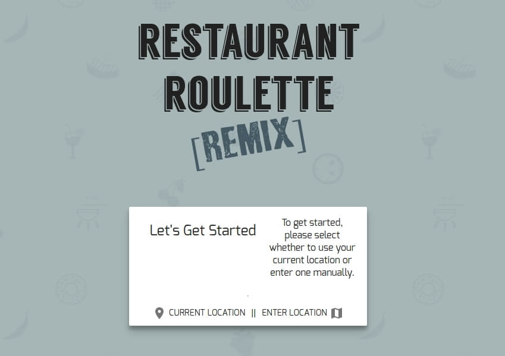
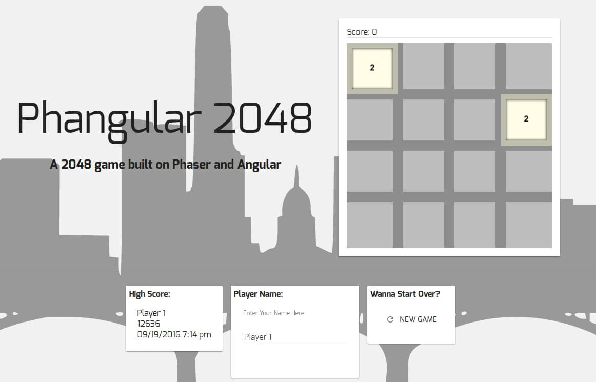
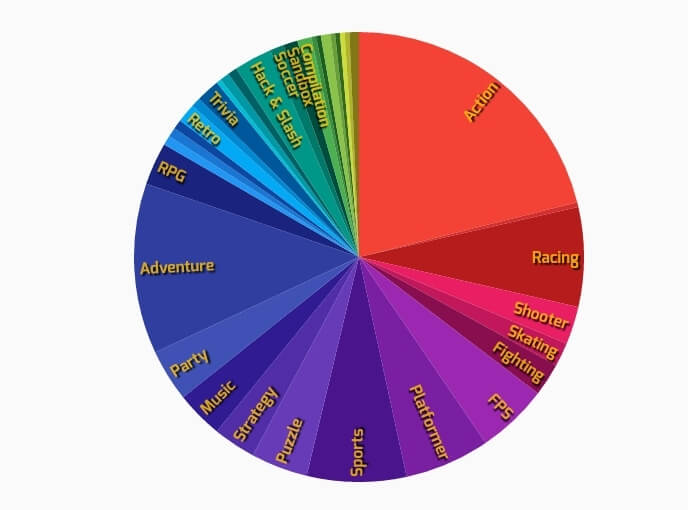

fun stuff
Welcome to my personal playground!
Here are some apps I wrote. More to come soon!
Restaraunt Roulette Remix
Let fate decide where you eat!

A few years ago while attending MakerSquare I participated in a short hackathon. I was on a team with a couple
of other guys and we had a fifteen minute debate about where to eat lunch the day before. That inspired us to write
something that would settle future debates and just tell us where to eat based off of location and call it Restaurant
Roulette. Years later I still liked the idea and knew I had enough knowledge to do it a lot better. This is the result,
hence the name Restaurant Roulette Remix. Put and end to those "where should we eat" arguments!
Try It!
Phangular 2048
Kill some time playing 2048

This is just a little 2048 game I developed. I had never really done any game development and figured this
would be an easy one to get me going. I used this as an opportunity to explore Phaser which is a sort of
game engine for JavaScript. After getting a feel for what Phaser does, I can definitely say that I'll be
using this to create more little games in the future. Make sure to enter your name because this is hooked up
to a little database that will store the highest score!
Play It!
Video Game Library
Check out my video game collection

Also, it might be kind of interesting to some folks to see my video game collection. I threw together some
data tables for myself so I could see what I had already and remind myself of things I decided I wanted to add
to the collection soon. My collection is growing fairly quickly so I can keep up with it this way.
I realized that some folks might find it interesting as well. This was originally developed to be standalone so
excuse the boring appearance. This is a bit more utilitarian.
See It!